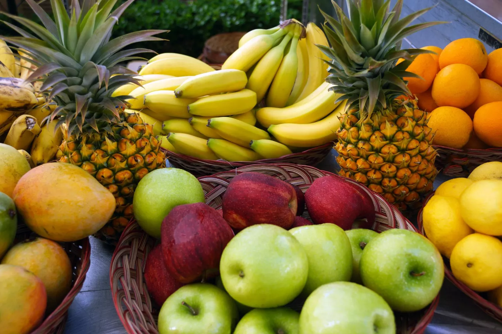
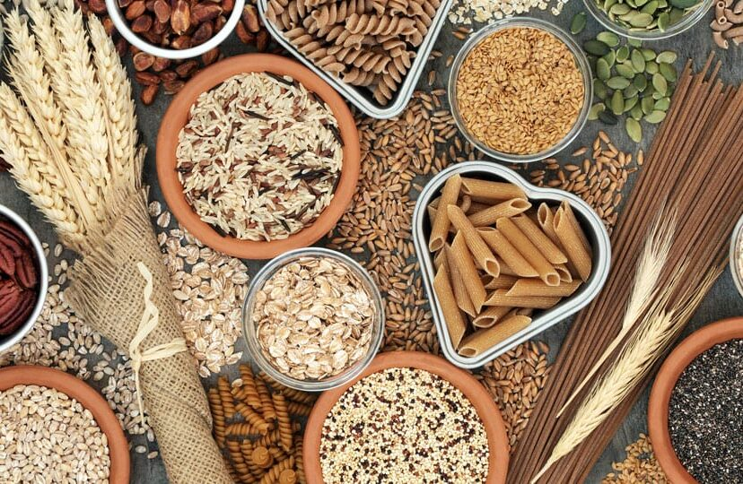
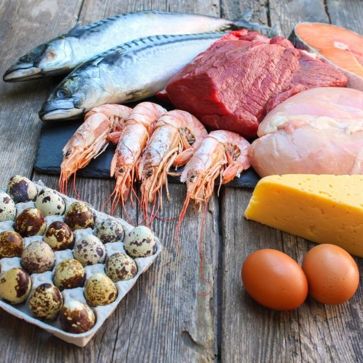
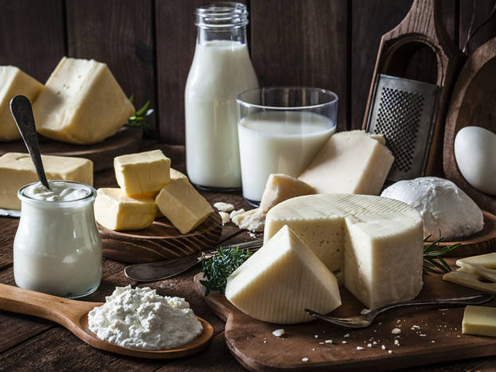

| Tipo de Alimento | Ejemplos | Imagenes |
|---|---|---|
| Frutas | Fresa, Manzana, Pera, Sandía |  |
| Verduras | Chayote, Papa, Cebolla, Zanahoria | |
| Cereales | Arroz, Maíz, Trigo, Cebada, Avena |  |
| Leguminosas | Alfalfa, Chicharo, Garbanzo, Habas, Ejote | |
| Origen Animal | Carne Roja, Huevos, Pescado, Mariscos |  |
| Leche y sus Derivados | Leche, Crema, Yogurt, Queso, Mantequilla |  |
Si bien, todos tenemos necesidades diferentes de nutrición, lo que es igual para todos es tener hábitos de alimentación quefavorezcan nuestra salud y la de toda nuestra familia. La preparación de los alimentos debe ser higiénica, es mucho mejorpreparar los alimentos en casa y si es posible comer en compañía de la familia o amigos para poder disfrutar ese momento.La dieta debe de ser variada y suficiente. Respecto a esto, en los siguientes blogs te mostraremos cuáles son las porcionesadecuadas para comer lo que tu cuerpo necesita.
Debemos aprovechar también los alimentos regionales en donde vivimos y los de cada estación ya que eso también nosayudará a tener una alimentación variada y económica.
Otra cosa importante es incluir en las comidas principales (desayuno, comida, cena) todos los grupos de alimentos,consumiendo más verduras, debido a que nos dan satisfacción y contienen fibra, agua, vitaminas y elementos inorgánicos(minerales).